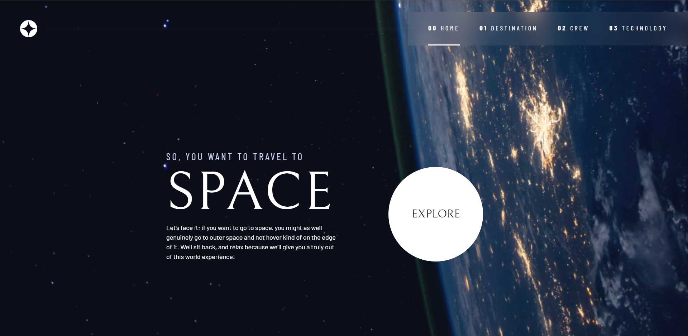
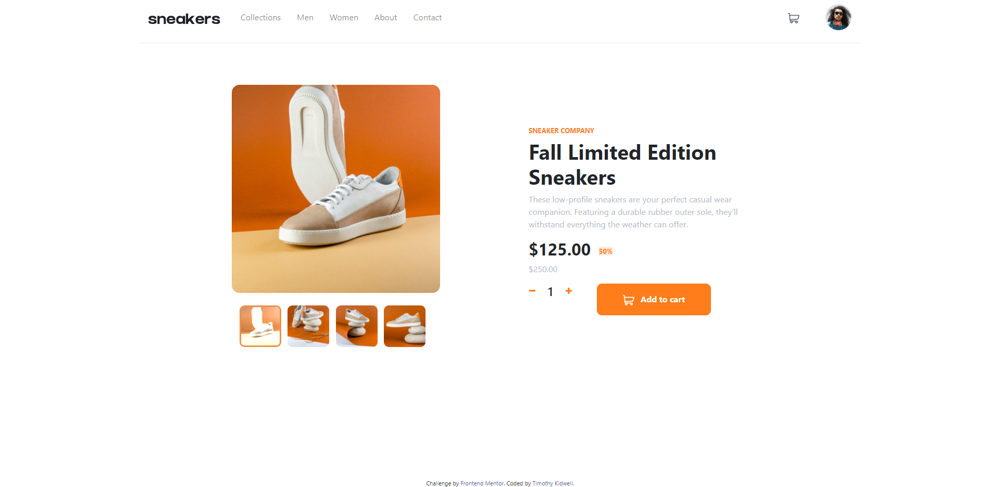

Space Tourism
A space tourism challenge site implemented using html/CSS/javascript. This is a multipage project that uses css grid and flexbox to create responsive and varied pages. The project was supplemented by following a tutorial on more advanced CSS practices.

eCommerce page
This page was a FrontEndMentor project to build out an eCommerce site using the materials provided. The project was for a single webpage with basic javascript functionality.